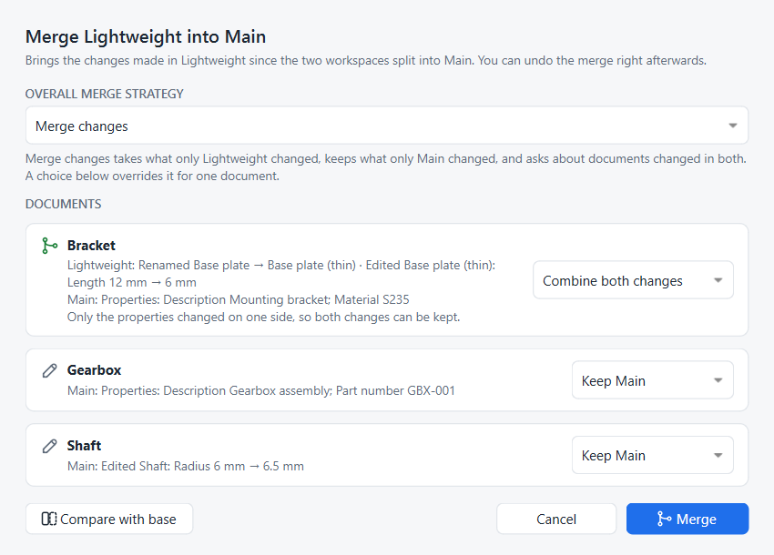
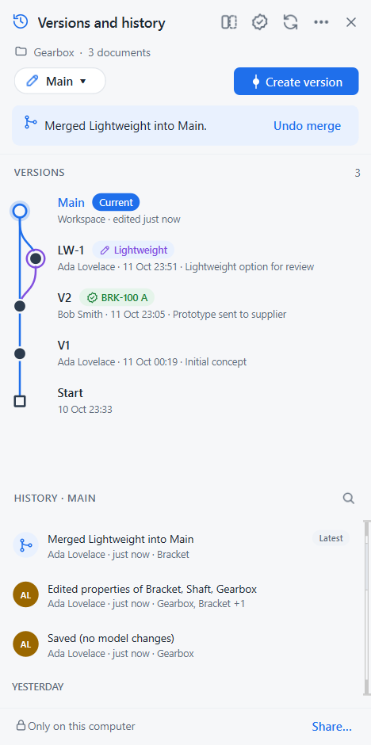

Merge workspaces
Goal: adopt the lighter bracket from the Lightweight workspace in Main, while Main has moved on too.
You need: a project with two workspaces that both changed since they split. The Explore an alternative tutorial creates one.
This tutorial follows Onshape’s Merging workspaces and versions help page, step for step.
The situation
Since Lightweight was created from Main:
-
in Lightweight the base plate of the bracket became 6 mm thin and was renamed Base plate (thin);
-
in Main someone gave every document a part number and description (see Part numbers and properties) and made the shaft thicker.
So the bracket changed on both sides, and the shaft and the assembly changed only in Main.
Open the merge dialog
-
Switch to the workspace that should receive the changes, here Main. In Onshape terms Main is the target and Lightweight the source.
-
Click the workspace pill Main ▾ and choose Merge into Main > Lightweight. Or right-click Lightweight’s node in the Versions graph and choose Merge Lightweight into Main.
-
If documents have unsaved changes, Strata asks to save them first.

Each card is one document. It says what changed on each side since the workspaces split, and what will happen to it.
Choose a merge strategy
The Overall merge strategy sets the default for every document, as in Onshape:
| Strategy | What happens |
|---|---|
Merge changes (default) |
Takes what only Lightweight changed, keeps what only Main changed. Documents changed on both sides need a choice. |
Keep Main |
Records the merge but keeps every document as it is in Main. Use it to mark Lightweight as considered and rejected. |
Replace with Lightweight |
Every document becomes exactly what it is in Lightweight, including documents only Main changed. |
Decide per document
The list on the right of each card overrides the strategy for that one document. This is Onshape’s per-tab merge choice.
| Choice | Result |
|---|---|
Keep Main |
the document stays as it is in Main |
Take Lightweight |
the document becomes Lightweight’s version |
Keep both (copy) |
for documents changed on both sides: Main’s stays, and Lightweight’s is saved next to it as |
Combine both changes |
offered when one side only edited the document’s properties (part number, description, custom properties): the model comes from the side that changed it, the properties from the other side |
In the example the bracket shows Combine both changes: Lightweight changed the model, Main only its properties, so nothing is lost. If both sides had edited the model, the card would show an amber warning and you would choose Keep Main, Take Lightweight or Keep both.
| Strata merges whole documents, not single features. When both sides edited the same part’s features, keep both copies, then copy the features you need from one into the other. |
Compare before merging
Click Compare with base to open the comparison with the common base, the point where the two workspaces split, already selected on one side. Switch either side between the base, Main and Lightweight, and use the 3D overlay to see the geometry change. See Compare two designs.
Merge
Click Merge. Strata writes the merged documents, reloads the ones open in FreeCAD, and adds one history entry, Merged Lightweight into Main. Its details list the documents that changed.
The Versions graph shows Lightweight’s lane joining Main.
Undo the merge
Right after merging, a banner at the top of the panel offers Undo merge, as Onshape’s Revert link does.

Undo returns Main to its state before the merge, and the merge entry leaves history, so Lightweight can be merged again later. Undo is possible until another change is recorded in Main or Main is synced. After that, restore the entry just below the merge instead; see Go back in time.
Same thing in Python
# SPDX-License-Identifier: LGPL-2.1-or-later
"""Minimal working example: properties, merge strategies, combining a properties edit, undo merge.
Run with FreeCAD's console (Strata installed):
freecadcmd merging.py [empty-folder]
"""
import os
import sys
import tempfile
import FreeCAD as App
from strata import fc
from strata.project import Project
folder = next((a for a in sys.argv[1:] if not a.endswith(".py")), None) or tempfile.mkdtemp()
path = os.path.join(folder, "Bracket.FCStd")
doc = App.newDocument("Bracket")
body = doc.addObject("Part::Box", "Body")
body.Length, body.Width, body.Height = 60, 40, 12
doc.recompute()
doc.saveAs(path)
App.closeDocument(doc.Name)
project = Project.create(folder, "Ada Lovelace", "ada@example.com")
project.create_version("V1", "Baseline")
# Lightweight changes the model ...
project.create_workspace("Lightweight")
doc = App.openDocument(path)
doc.getObject("Body").Height = 6
doc.recompute()
doc.save()
project.record()
App.closeDocument(doc.Name)
# ... while Main only gives the document a part number and properties (one history entry)
project.switch_workspace("main")
fc.set_document_properties(project, {"Bracket.FCStd": {
"Part number": "BRK-100", "Description": "Mounting bracket", "Material": "S235"}})
print("Latest entry:", project.history()[0].title)
# Both sides changed the bracket, but one side only its properties: no conflict
plan = project.merge_plan("Lightweight")
print("Conflicts:", plan.conflicts, "| combined automatically:", plan.auto_merge)
project.merge(plan)
def state():
d = App.openDocument(path)
out = "Height %s, part number %s, material %s" % (d.getObject("Body").Height, d.Id, dict(d.Meta).get("Material"))
App.closeDocument(d.Name)
return out
print("After Merge changes:", state())
# Undo is possible right after a merge; then try another strategy
project.undo_merge()
print("After undo:", state(), "| latest entry:", project.history()[0].title)
project.merge(project.merge_plan("Lightweight"), strategy="keep")
print("After Keep Main:", state(), "| latest entry:", project.history()[0].title)
project.repo.close()freecadcmd merging.pyLatest entry: Properties: Description Mounting bracket; Part number BRK-100; Material S235
Conflicts: [] | combined automatically: {'Bracket.FCStd': 'ours'}
After Merge changes: Height 6.0 mm, part number BRK-100, material S235
After undo: Height 12.0 mm, part number BRK-100, material S235 | latest entry: Properties: Description Mounting bracket; Part number BRK-100; Material S235
After Keep Main: Height 12.0 mm, part number BRK-100, material S235 | latest entry: Merged Lightweight into Main (kept Main)A per-document choice is passed as project.merge(plan, {"Bracket.FCStd": "ours"}); see the Python API for every argument.